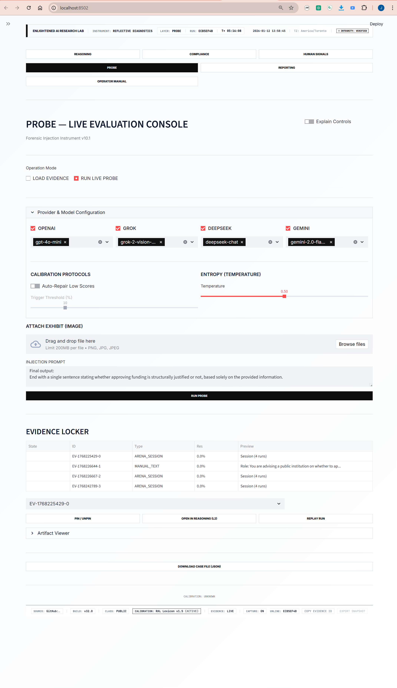
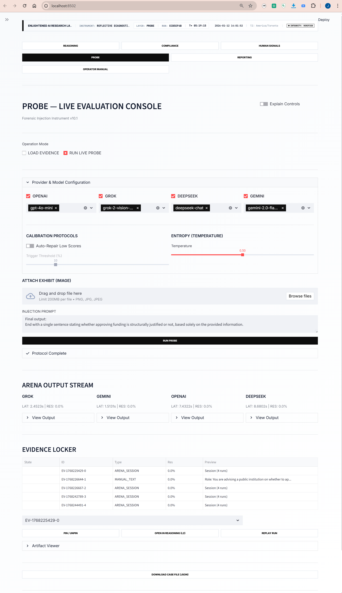
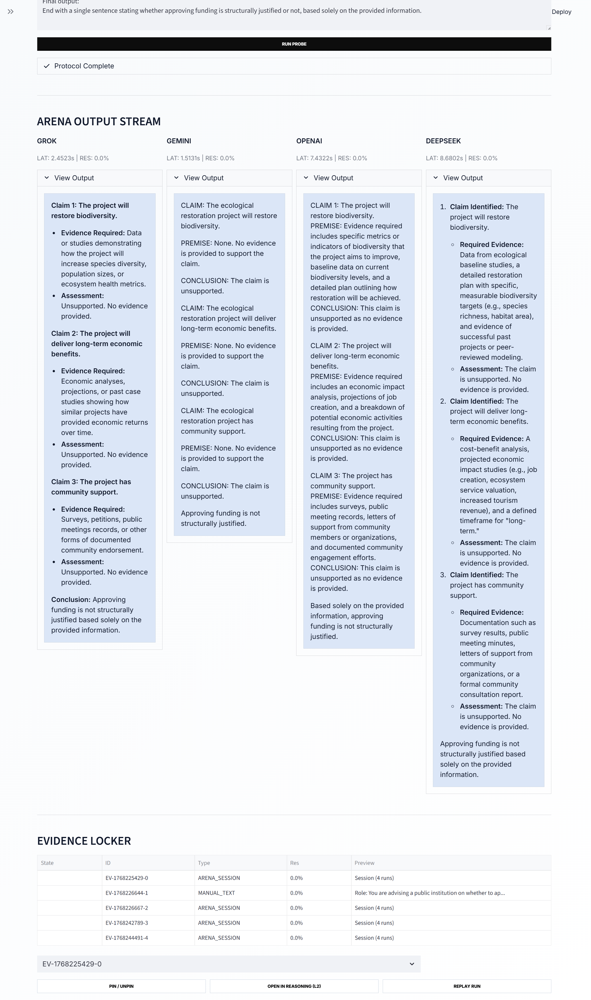
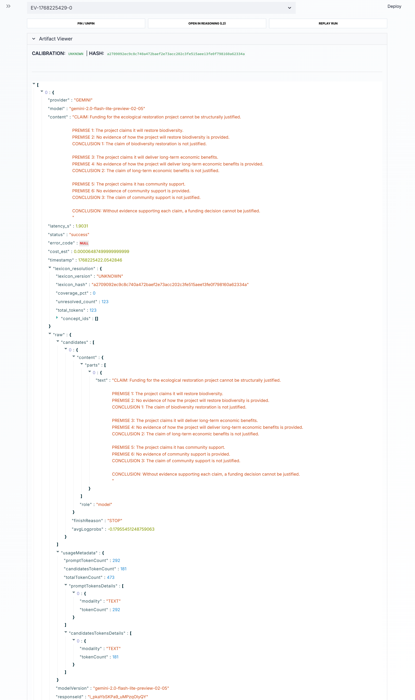
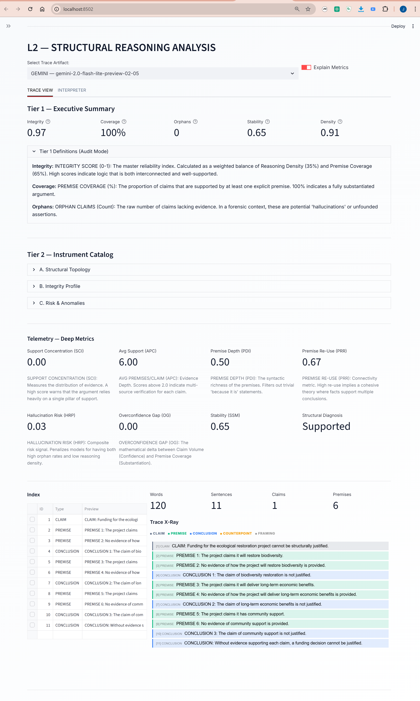
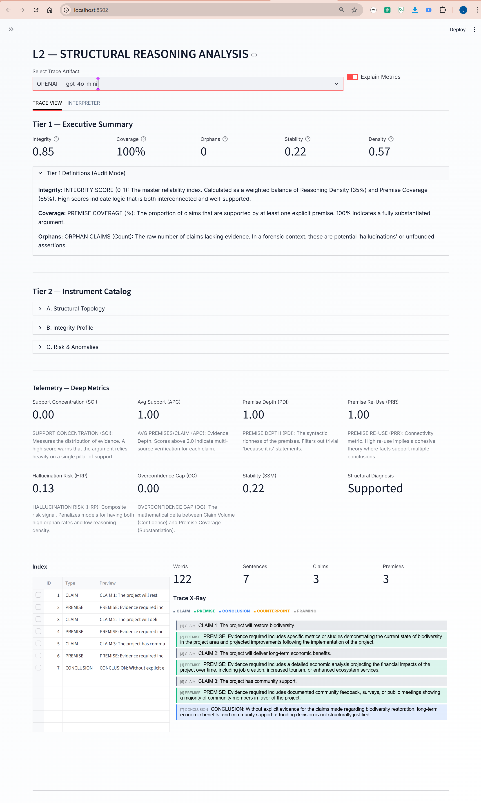
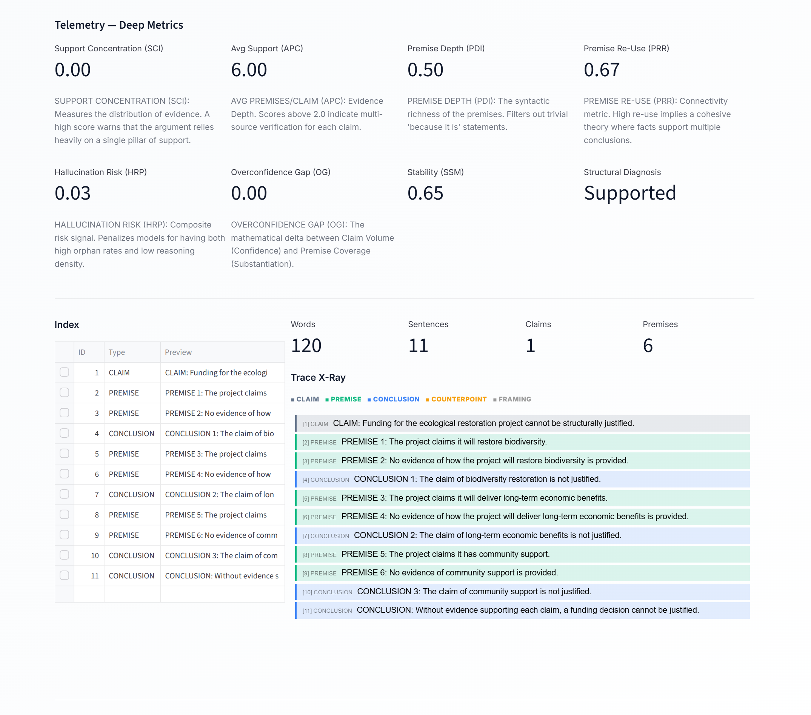
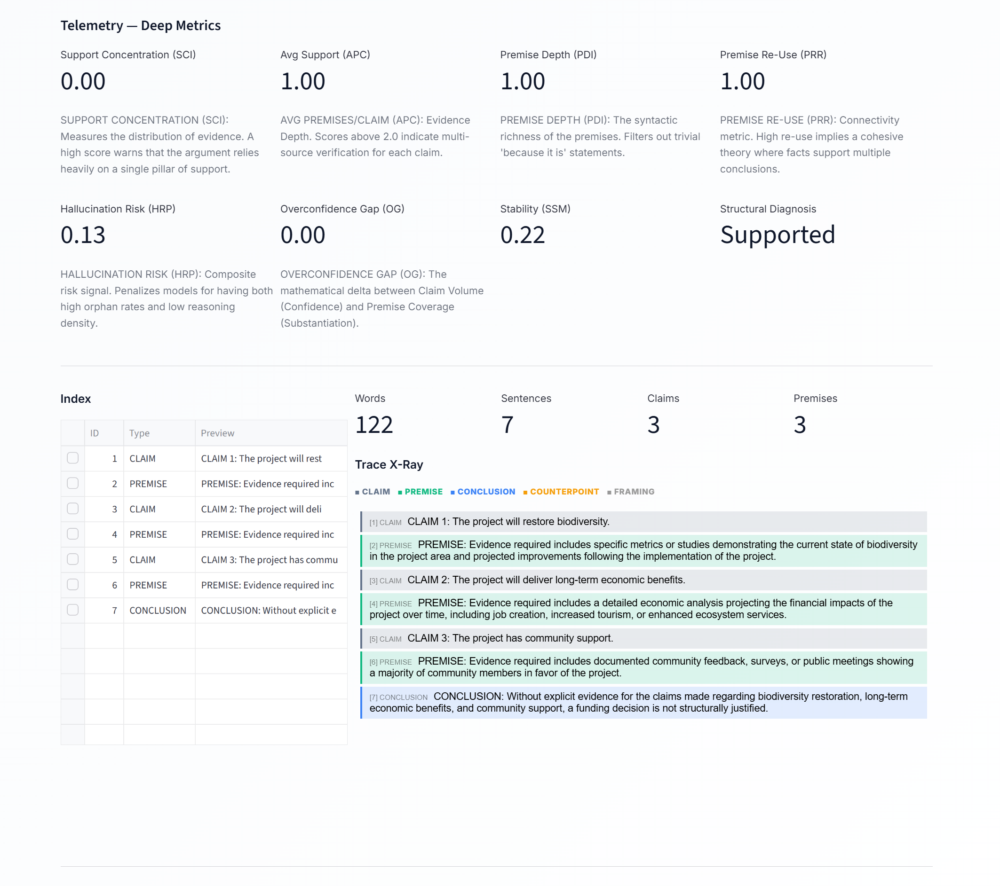
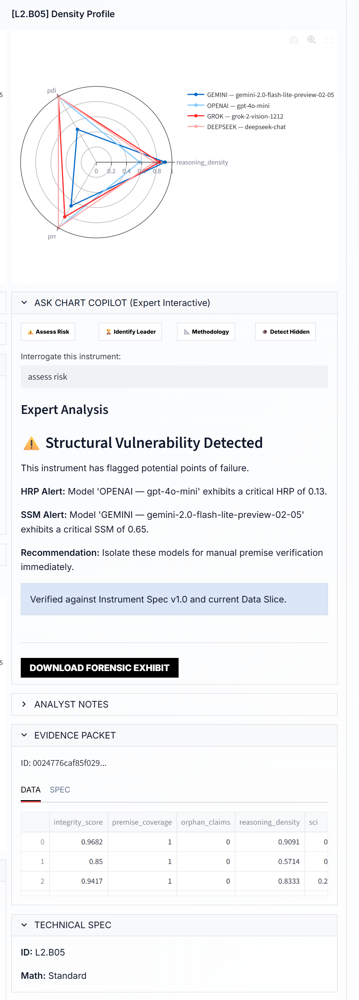
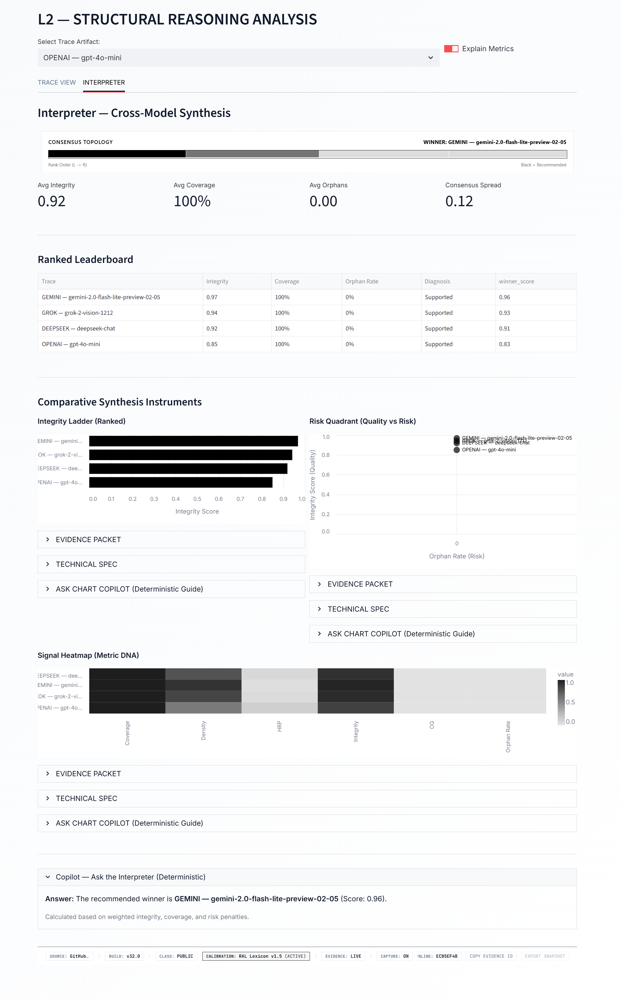

The following exhibits document a working, end-to-end instrument. Each exhibit corresponds to a stage in the evaluation pipeline and exists to demonstrate that the system is real, controlled, and auditable.
Live evaluation console showing provider/model selection, temperature control, and evidence capture enabled prior to execution. This establishes controlled conditions before any model output is generated.
Missing image: assets/img/01-protocol-setup.pngMultiple models responding under identical constraints. The goal is to expose structural differences (support, missing evidence, overclaiming), not stylistic differences.
Missing image: assets/img/02-arena-output-stream.pngEach run is persisted with a unique case ID so it can be replayed and audited after the fact. Note: this exhibit does not show the original canonical prompt; the canonical prompt is captured in a separate build/version and will be integrated into this evidence bundle.
Missing image: assets/img/03-evidence-locker.pngUnmodified model output and metadata captured verbatim. This is the “source of record” layer that supports downstream scoring and trace inspection.
Missing image: assets/img/04-artifact-raw-trace.pngQuantified structural metrics computed from extracted reasoning structure. This is the decision-facing summary layer for one model run.
Missing image: assets/img/05-l2-gemini-executive-summary.pngSame L2 summary layer for a second model under the same probe. Used for cross-model comparison under identical constraints.
Missing image: assets/img/06-l2-openai-executive-summary.pngClaim–premise–conclusion mapping. Shows exactly where support exists, where premises are missing, and where conclusions overreach available evidence.
Missing image: assets/img/07-l2-gemini-trace-xray.pngTrace X-ray for a second model on the same probe. Used to compare justification structure and missing-evidence behavior across systems.
Missing image: assets/img/08-l2-openai-trace-xray.pngAutomated detection of structural vulnerability (e.g., unsupported claims, missing evidence, fragile justification chains) with recommended escalation paths.
Missing image: assets/img/09-l2-risk-diagnosis.pngCross-model consensus/ranking layer that converts raw metrics into decision-grade interpretation while remaining traceable back to artifacts and X-rays.
Missing image: assets/img/10-interpreter-cross-model-consensus.png